From a freshly unpacked DropBot to your first protocol: connect, line the camera up with the chip, load liquid,
make and move droplets, and then write those moves down as a protocol that MicroDrop runs for you.
The clips and photos are real recordings of a DropBot chip. Where you can try things out, for routes and protocols, the
pictures are simulations on a photo of the real chip: press ▶ Play to watch, or Step ▸ to
go one move at a time.
1. Set up and connect
Where things are, and how to get MicroDrop talking to the DropBot.
The main window, numbered as in the list below. Your panes may be arranged differently; View brings back any you close.
Device Viewer. The live camera picture of the chip, with every electrode outlined on top. You click
electrodes here to switch them on and draw routes for droplets to follow.
Side panel. Camera, alignment, route settings and more, in collapsible sections. The
strip between the picture and the panel
hides or shows it.
Mode buttons at the bottom of the side panel: what a click or drag on the chip does.
Dropbot Status. Is the DropBot connected, is a chip in, voltage, frequency and live readings.
Pluggable Protocol Tree. Your protocol: a list of steps, with the buttons that run it.
Status bar. Says whether you are in Free Mode (trying things out) or
Editing a protocol step.
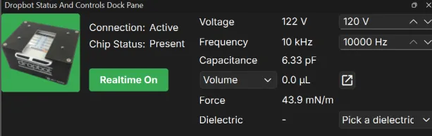
The Dropbot Status pane (④):
Connection and Chip Status.
Realtime On / Realtime Off (T).
What the DropBot measures: voltage, frequency and capacitance.
The voltage and frequency you ask for.
A droplet readout (Volume, Fill or Covered area) and the force.
Dielectric: pick your chip's coating (see chapter 2).
The mode buttons (③), with their keys:
Draw (D)
Edit (E)
Autoroute (A)
Edit Electrode Channels (N)
Clear Electrode States (X)
Clear Routes (Shift+X)
Undo (Ctrl+Z)
Redo (Ctrl+Y)
Connect
Plug in the DropBot's power and USB cable, then start MicroDrop.
Insert a chip. In Dropbot Status you should see Connection: Active and
Chip Status: Present.
Click Realtime Off so it reads Realtime On (or press T with the
Device Viewer selected). Only now does the DropBot actually power the electrodes you click.
Set the voltage and frequency in the boxes on the right of the pane. The exact numbers depend on your chip and liquid;
ask whoever supplied the chip, or start with the values MicroDrop opens with.
More on this pane:Help ▸ Tutorials ▸ Dropbot Status & Controls
Tutorial explains every field, the realtime switch and the capacitance calibration.
2. Line up the camera with the chip
MicroDrop draws the electrode outlines over the camera picture. Aligning tells it where the chip sits in the
picture, so the outlines land on the real electrodes and you can click right on the liquid. Do it once per chip holder and
camera position; MicroDrop remembers it.
Real example (edited for length). Align Camera, show the corners, drag the four dots onto the chip in the camera frame, turn the drawing and the frame to match, move the drawing's dots to the same corners, then Confirm Alignment. Slow drags are sped up (the badge shows how much) and waits are cut out.
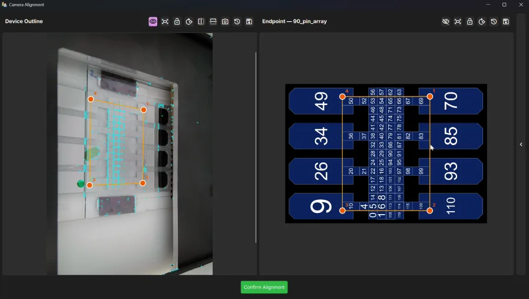
The Camera Alignment window: Device Outline (the camera frame) on the left, Endpoint (the chip drawing) on the right.
Show every corner the dots can snap onto.
Rotate a quarter turn clockwise.
Mirror the camera image left–right and top–bottom.
Recapture — grab a fresh frame from the camera.
The four numbered dots on the camera frame.
The same four corners on the drawing, in the same order.
Confirm Alignment.
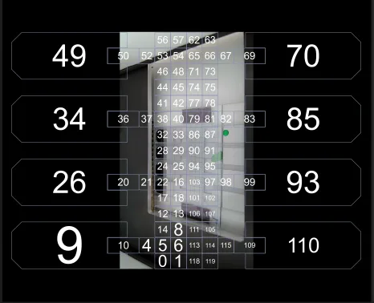
Before: the camera picture sits small and turned, nowhere near the outlines.
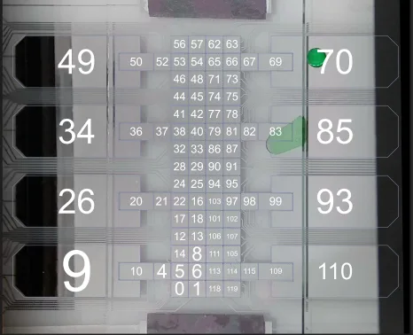
After: the picture is stretched onto the outlines and every electrode lines up.
Open Camera Controls in the side panel. Pick your Camera and
Resolution, and switch the camera on with .
Click Align Camera. The Camera Alignment window opens:
Device Outline, a still frame from the camera, on the left, and Endpoint, the
chip drawing, on the right.
On the left, click (①) to show every corner the dots can snap onto, then
drag each of the four orange dots onto a corner of the electrode area. They snap onto those corners. Scroll to zoom in for
precision, drag the picture to pan.
Make the frame and the drawing face the same way. Each pane has its own Rotate a quarter turn clockwise (②), and the frame has two mirror buttons (③); in the clip the
drawing is turned first, then the frame. (④) grabs a fresh frame.
On the right, drag the drawing's four dots onto the same four corners, in the same order: the dots are numbered, and dot 1
must sit on the same corner in both panes. If the order differs, MicroDrop asks before going on.
Click Confirm Alignment (⑦) and close the window. MicroDrop saves the endpoint and the camera
picture glides into place under the electrode outlines.
Check: the outlines should sit on the real electrode edges everywhere. If they drift, open Align
Camera again and nudge the dots. After moving the camera, Go To Endpoint re-applies the saved
frame.
To turn the whole view, use Rotate Device
in Camera Controls (R). The pictures in this tutorial show the chip the way MicroDrop shows it:
the eight large reservoirs on the left and right, and the grid of small electrodes running down the middle.
Capacitance calibration (optional, recommended)
The Calibration section at the bottom of the side panel teaches MicroDrop what the filler and your
liquid look like electrically, which powers the volume and force readings.
Real example (edited for length). Filler measured on a switched-on electrode next to the droplet,
the droplet moved onto it, liquid measured, then the chip's dielectric picked in Dropbot Status.
Waits are cut out.
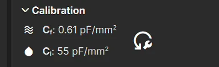
The Calibration section after both measurements:
Measure filler Capacitance, with its reading Cf.
Measure Liquid Capacitance, with its reading Cl.
Reset Measurements.
Switch on one electrode that has only filler on it, next to a droplet. Click
Measure filler Capacitance (①). Cf shows the reading in
pF/mm².
Move the droplet onto that electrode (switch it on next door, then switch off where it was, as in chapter 5).
Click Measure Liquid Capacitance (②). Cl shows the
reading.
In Dropbot Status, open Pick a dielectric... and choose your chip's
coating. MicroDrop then shows the coating's thickness next to Dielectric, and the force reading
uses the calibration.
A measurement uses the electrodes that are switched on, so switch on exactly the one you mean. The Dropbot Status tutorial
covers this in detail.
3. Load a reservoir
The large electrodes at the sides are reservoirs. Liquid goes in at the edge of the glass top plate, not on
top of the plate and not into the middle of the chip.
Real example, real speed. Reservoir 34 is switched on; the drop pipetted against the glass edge is drawn in under the plate and fills the reservoir as a U around neck electrode 36, which stays dry.
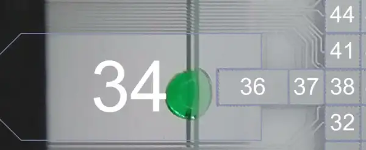
Where to pipette: on the reservoir, right against the edge of the glass top plate.
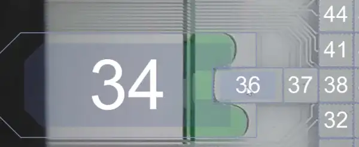
Loaded: the liquid takes the reservoir's shape, a U around the first neck electrode, and stays off it.
Make sure Realtime On is showing, and you are in Mode: Draw.
Find the reservoir you want, for example 26 on the left (the photos show its neighbour 34, which works
the same). Its outer end sticks out past the glass top plate: that strip is where you load.
Click the reservoir to switch it on. It turns darker blue-grey.
With a pipette, place a small drop (about 2 µL) on the reservoir, right against the edge of the glass.
The drop should touch the glass edge.
The switched-on reservoir pulls the liquid in under the plate. It fills the reservoir pad from the glass edge inwards and
takes its shape: a U around electrode 20, the first neck electrode, which sits in a notch of the reservoir. The liquid stays
off 20 until you switch 20 on.
To add more, pipette again at the same spot while the reservoir is still on.
Common mistakes: pipetting on top of the glass (nothing happens), pipetting with the
reservoir off (the drop just sits at the edge), and pipetting too far from the edge (the drop never touches the gap, so it is not
pulled in).
4. Dispense a droplet by hand
A droplet is pulled out of the reservoir along the row of electrodes leading from it, then cut off. Each click
switches one electrode on or off, and with Realtime on the DropBot follows straight away.
Real example, 2× speed. The same technique on reservoir 9: 10, 4 and 5 come on one after another and the liquid follows, emptying the U in the reservoir.
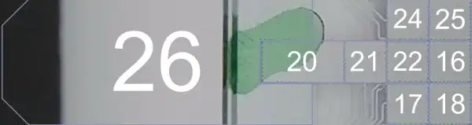
The order for reservoir 26: switch on 20, 21, 22 and 16 one at a time, then switch 20 and 21 off.
Keep the reservoir (26) on.
Click the next electrodes out of the reservoir one at a time: 20, 21, 22
and 16. Wait for the liquid to reach each one before clicking the next. A finger of liquid follows, and the
liquid in the reservoir goes down by exactly what the finger takes.
Click 20 and 21 again to switch them off. Leave the reservoir and the last two
(22, 16) on.
The finger thins in the middle and snaps. A droplet stays on 22 and 16; the rest runs back into the reservoir.
Hover over an electrode to see its number (Electrode ID, Channel
and area). The pictures here label electrodes by channel number, the same number MicroDrop shows.
5. Move a droplet by clicking
A droplet moves onto a switched-on electrode next to it. Switch on the electrode in front, then switch off the
one behind.
Real example, real speed. Each droplet follows the switched-on electrodes (blue) to its next position in under a second: the electrodes in front come on, the ones behind go off.
The droplet sits on 22 and 16. Click 103 (to its right) to switch it on: the droplet stretches onto it.
It gains no liquid, so it gets thinner as it spreads over three electrodes.
Click 22 to switch it off: the droplet lets go of it and now sits on 16 and 103. It has moved one
electrode to the right.
Repeat to keep going. Always move to a neighbour; a droplet cannot jump over an electrode.
Faster: the keyboard
Click the Device Viewer first so it has the keyboard, then:
Keys
What happens
←↑→↓
Step every switched-on electrode one place that way: the droplet follows.
Shift + arrow
Grow the switched-on area that way.
Ctrl + arrow
Shrink it from that side.
X
Switch every electrode off ( Clear Electrode States).
F
Find liquid: switch everything off, then mark where MicroDrop detects droplets.
Ctrl+Z / Ctrl+Y
Undo / redo.
F1
Show every keyboard shortcut.
Right-click the chip for more: Clear Electrodes, Find Liquid,
Disable Electrode (for a damaged one) and the two calibration measurements.
How much liquid is that?
The Volume readout in Dropbot Status estimates the liquid on the electrodes
that are switched on, from the capacitance and the calibration of chapter 2. Its menu switches between
Volume, Fill and Covered area; the pop-out button
beside it, Show all droplet readouts, opens a small Droplet Readouts window that shows them all and
stays open while you work.
Real example, 3× speed. The Droplet Readouts window as droplets are moved and more of them are
switched on: one droplet reads about 2 µL, and the total grows to about 9 µL as the others join.
6. Routes: let MicroDrop do the clicking
A route is a line drawn across the electrodes. When it runs, MicroDrop switches the electrodes along it on and
off in turn, and the droplet rides along. Routes are how you move, mix and park droplets without clicking every step.
From here on the pictures are simulations you can step through: the green shape is a simulated droplet
drawn over a photo of the real chip, and the lit electrodes, routes and phases follow MicroDrop's own rules.
Draw a route
Press on the droplet's electrode and drag through neighbouring electrodes to where it should go. The run below uses
Length 2 and Overlay 1 with Rot Lock on, as the panel starts: the droplet keeps lying across as it turns the corner.
Choose Draw mode (D).
Press on the droplet's first electrode (here 22) and drag through the electrodes you want, in order. Each neighbour you
cross adds a step; the line turns yellow because it is the selected route.
Let go at the end. The route appears in the Path / Run table under
Paths, named like Path: 22 → 79.
Click Run selected routes to run it now. The tinted electrodes
show the whole area the droplet will sweep, and a dashed outline shows where it is at each moment.
Change, reverse or delete a route
Icon / key
Name
What it does
E
Edit
Drag from either end of
the selected route (or any point on it) to extend it. Hold Ctrl and drag with the right mouse button over the
route to erase pieces.
Alt+arrow
Draw by keyboard
Grow the route one electrode that way;
Backspace removes its last electrode.
Show / hide
In the Path table: hide a
route from the picture without deleting it.
Run
Include the route when you click
(crossed out: left out).
Del
Delete
Delete the route. Right-click
a row for Invert (run it backwards) and Execute Path.
Clear Routes
Delete every route
(Shift+X).
Auto route
Let MicroDrop find the path for you.
Choose Autoroute
(A).
Press on the start electrode and drag towards the destination. A pink preview shows the shortest path around your
other routes; it follows the pointer.
Let go on the destination. The preview becomes a normal route. Hold Alt while dragging to allow it to cross
existing routes.
Loops: mixing in place
Drag a route back onto the electrode where it started and it becomes a loop. A droplet sent round a loop again and again
mixes its contents, which a droplet sitting still does very slowly.
Real example. Three droplets mixing on three loops at once (4× speed); the selected loop is yellow, the dashed outline shows where its droplet is.
The Path table names it Loop @ 40. Unselected loops are drawn orange or red, so you can tell which way they turn.
Set how many laps with Reps, or how long to keep going with Rep Duration
(below).
Give the droplet room to go round: here a droplet two electrodes long circles a block of 2×3. With Rot Lock on (as the
panel starts) it keeps lying the way it set off; the simulator below shows the difference.
Several routes can run at once, one per droplet: each gets its own tint, so you can mix several droplets side by side.
Execution Settings
These shape how the selected route runs. Open Paths ▸ Execution Settings in the side panel. Each
run is a list of phases: one set of electrodes switched on for one Duration.
Setting
What it does
Duration
Seconds each phase is held before the next one (1.0 to start with).
Length
How many electrodes along the route are on at once: the droplet's footprint along its way.
Overlay
How many of those stay on into the next phase, so each phase moves on Length − Overlay
electrodes. At most Length − 1; where the footprint could not move without a gap, MicroDrop uses the smallest overlay
that keeps it continuous.
Reps
Laps of a loop, after which the droplet returns onto the loop's start. With Lin Reps it
replays an open route instead. Greyed out (kept at 1) when there is no loop and Lin Reps is off.
Rep Duration
Instead of Reps, for a loop: as many whole laps as fit in this many seconds (at least
one), then the droplet waits at the start until the time is up. Editing Reps sets it back to 0, and the other way round.
Ramp Up
Start gently: the footprint comes on a row at a time from its tail (one electrode at a
time for a one-wide route) until it is full.
Ramp Dn
Finish gently: at the end the footprint goes off a row at a time from its tail, down to
the head row.
Lin Reps
Replay an open route Reps times, each time starting again from its first electrode
(not back and forth).
Lanes
Extra electrodes beside the route: the left number adds lanes on one side, the right number
on the other, up to 4 in all. With Rot Lock on they are the screen-left and screen-right of travel; with it off and In/Out
ticked, inside and outside of the turns. Where a lane runs off the electrodes, the nearest free electrodes make up the
count, so a wall shifts the footprint sideways.
Rot Lock
On (as it starts): the footprint keeps the orientation it set off with and only slides
through corners. Off: it turns with the route, re-hung behind the leading electrode after every corner. A square footprint
(Length equal to its width) always just slides.
Re-centre
Shown with Rot Lock on: when the locked footprint moves sideways to its own direction, it
is centred on the route. Off, it keeps the position it arrived in, so the route runs along its edge.
In/Out
Shown with Rot Lock off: read the two lane numbers as inside / outside of the turn instead
of left / right.
Changes show at once in the tinted preview on the chip (the Route Shape: every electrode the run will use). To
store them in a protocol step, click Apply execution params to step (see
Design a protocol).
Try:
⌄ Execution Settings
Lanes
00
The phases are computed with the same rules MicroDrop uses, ported from its route code, on this chip's real
electrode layout. The droplet keeps its volume: a footprint bigger than the droplet only stretches it thinner. The yellow
line is the route, the blue tint its Route Shape, the dashed outline the electrodes on in this phase. Playback runs at up to
1.8 s per phase whatever the Duration; the readout shows the real times.
7. Split a droplet
Hold the part you want to keep where it is and pull the rest away: the droplet tears in one piece. The quickest
split, the one in the clip, takes one electrode's worth off a larger droplet in a few seconds.
Real example (edited for length). One electrode's worth splits off the big droplet, then moves away on its own, down and to the left. Idle waits are cut out, and the thin trail left on the chip after the split is painted out.
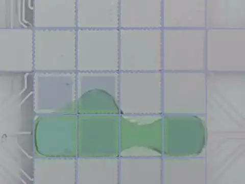
The three actions, as in the clip: (1) the electrode the new droplet sits on stays on, (2) its neighbour goes off, (3) electrodes beside the far end come on.Real example, real speed. Merging: two droplets brought onto neighbouring electrodes join into one within about two seconds; the volumes add.
Start with a droplet bigger than the one you want, for example four electrodes' worth in a row on 22, 16, 103 and 97.
Leave on the electrode the new droplet should sit on (97; ① in the photo) and switch off its
neighbour (103; ②).
At the same time switch on two electrodes beside the far end (24 and 25, above 22 and
16; ③). The rest of the droplet is pulled away from 97, and a neck forms over 103.
The neck thins and snaps: 97 keeps exactly one electrode's worth, and the other three electrodes' worth gathers on 22,
16, 24 and 25. If the neck lingers, switch on one more electrode further away from 97. A tiny bead of liquid can be left
between the two droplets; move one of them over it and it is picked up again.
The new droplet on 97 is a droplet like any other: move it by switching on the electrode next to it and then switching
off the one it sits on, as in chapter 5.
To halve a droplet instead, pull its two halves apart: switch on the electrodes beyond both ends and switch
off the middle ones; the middle thins and snaps. With the keyboard: switch on the droplet's electrodes, hold
Ctrl+Shift and press → (or ↓) repeatedly to push them apart from the middle; ←/↑
brings them back. A droplet keeps its volume: a split shares it out, a merge adds it up, and a droplet on a single electrode is
too small to split.
8. Design a protocol
Everything so far you did by hand. A protocol writes it down as a list of steps, so MicroDrop
can repeat it exactly, as often as you like.
What a step is
A step is one line in the protocol: which electrodes are on, which routes run, at what voltage and frequency, and for how
long. When the protocol runs, MicroDrop does the steps from top to bottom.
Select a step in the tree, and the Device Viewer shows that step: its electrodes and routes. The
status bar reads Editing: Step 1.
Click electrodes or draw routes while a step is selected, and they are written straight into that
step's Electrodes and Routes cells.
Execution Settings are the exception: they are saved into the step only when you click
. If you forget, MicroDrop asks Commit or Discard when you move to
another step.
Press Esc in the tree to deselect: you are back in Free Mode, where clicks are not saved into
any step. Free-mode changes can later be kept with Insert as New Step.
Making steps
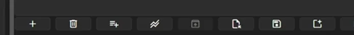
The buttons at the bottom of the protocol pane, numbered left to right in the order of the table below.
Icon
Tooltip
What it does
Add step below selection
A new step under the selected
one (Ctrl+Enter).
Delete last step
Removes the last step
(Ctrl+Backspace). To delete particular rows, select them and press Delete.
Add group
A group holds steps (and other
groups). Set the group's Reps to repeat everything in it.
Fill a column with a ramp or alternating pattern (Ctrl+Shift+F)
Right-click a step for the rest: Insert Step Above, Insert Group
Above, Copy / Cut / Paste (Ctrl+C
/ X / V) to duplicate or move steps, Fold into Group (Ctrl+G),
Bulk Set Values…, Fill Pattern… and Run Selected
Steps.
Build a sequence by clicking
The quickest way to write moves down: one step per move, each a copy of the one before with one electrode changed.
Real example (edited for length). Top: the droplet in the Device Viewer. Bottom: the protocol
pane. A first step, its electrodes clicked, then for each next step; at the end
the timeline is dragged to look through them. The repeats are sped up (badge).
In an empty protocol, click Add step below selection. A step appears and
is selected; the status bar reads Editing: Step 1.
Click the electrodes under the droplet. They are written into the step (its Electrodes count goes
up).
Click Next Step (S). On the last step it adds a copy of
that step and selects the copy.
In the copy, click the electrode the droplet should move onto, and click the one it leaves to switch it off. Repeat
and the two clicks for every move.
To look through what you wrote, click or drag along the timeline under Experiment: each step is
selected in turn and the Device Viewer shows it.
Fill a column: ramps and alternating values
To give a run of steps a pattern, such as a voltage that climbs or alternates, fill the column in one go instead of
editing every cell.
Real example (edited for length). All nine steps selected, the Fill Pattern window
opened from the toolbar, Column set to Voltage (V),
Alternate with the values 120, 125, then OK: the Voltage column now alternates. Typing pauses are cut
out.
Select the steps to fill: click the first, then Shift-click the last.
Click (④ in the toolbar picture), or right-click ▸
Fill Pattern…, or press Ctrl+Shift+F.
In Column, pick the setting to fill, here Voltage (V).
Pick a Pattern. Ramp counts from From to
To across the steps. Alternate cycles the Values
you type, separated by commas or spaces, for example 120, 125.
Read the line under the values: it says what will happen, for example Will set 9 selected steps, cycling 120, 125.
Values are rounded to whole numbers. A value outside the column's range (30 to 140 V for voltage) shows a message
instead, and OK stays greyed out until it is fixed.
Click OK.
With one step selected, Fill Pattern adds new steps after it instead (copies of it, as many as
New steps); with none selected, it adds them after the last step.
The columns
Double-click a cell to edit it. Right-click a column header to show or hide columns; drag a header to reorder them.
Column
What it means
Name
Your label for the step, e.g. “Dispense”.
Reps
Run the whole step (or group) this many times.
Route Reps
How many times the step's routes run, e.g. laps of a mixing loop.
Duration (s)
Without routes: how long the step's electrodes stay on. With routes: how long each
move of the route is held.
Electrodes
How many electrodes the step switches on (set by clicking in the Device Viewer).
Routes
How many routes the step runs (drawn in the Device Viewer).
Message
If filled in, MicroDrop pauses before the step and shows your text, with
Continue and Stay Paused. Use it for anything a person must do, like
pipetting.
Voltage (V)
The voltage for this step (30–140 V).
Frequency (Hz)
The frequency for this step.
Force (mN/m)
Read-only: the pulling force that voltage gives, once calibrated.
Worked example: load, dispense, move, mix, split
Build this protocol step by step. Each row is one step; the picture plays it back. Click Step ▸ to
follow along.
ID
Name
Reps
Route Reps
Duration (s)
Electrodes
Routes
Message
Voltage (V)
1
Load
1
1
5.00
1
0
Pipette 2 µL at the
glass edge beside reservoir 26, then click Continue.
100
2
Dispense
1
1
3.00
5
0
100
3
Cut
1
1
2.00
3
0
100
4
Move
1
1
0.70
0
1
100
5
Mix
1
3
0.50
0
1
100
6
Stretch
1
1
1.00
4
0
100
7
Split
1
1
2.00
2
0
100
Start fresh. Click New protocol. You get one step called
Step. Double-click its Name and type Load.
Load. With Load selected, click reservoir 26 in the Device Viewer (Electrodes becomes 1).
Set Duration to 5. In Message type the pipetting instruction.
Dispense. Click , name it Dispense, and click
26, 20, 21, 22, 16. Duration 3.
Cut. Add Cut with 26, 22, 16 on (the neck electrodes 20 and 21 off). Duration 2.
Move. Add Move. In Draw mode drag a route from 22 through
16, 103, then up 94, 90, 86 to 79. In Execution Settings set Duration 0.7, Length 2, Overlay 1 (leave Rot
Lock on), then click
.
Mix. Add Mix and draw a loop from 40 right through 79 to 81, up to 78, back along
77 and 42, and down onto 40. Same Length 2, Overlay 1, click . Set its
Route Reps to 3 for three laps.
Stretch and Split. The loop leaves the droplet on 40 and 79. Add Stretch with
38, 40, 79, 81 on, then Split with only 38 and 81 on.
Save. Click (Ctrl+S) and give it a name. Protocols
are saved as .json files, by default in a Protocols folder for this chip. Open them again with
, or File ▸ Protocol ▸ Load.
The title of the pane shows [modified] while there are unsaved changes. Changes live in memory
until you save; MicroDrop asks before throwing them away.
9. Run the protocol
The buttons at the top of the protocol pane run your steps, much like a media player.
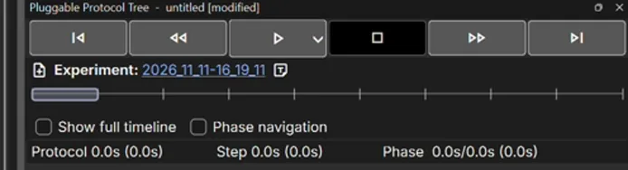
The top of the protocol pane: the transport buttons ① to ⑥ (in the order of the table below), the experiment, the timeline and the timers.
Transport buttons
Icon
Tooltip
What it does
First Step (A)
Select the first step.
Previous Step (W)
Select the step above.
Play Protocol
Run
from the selected step (or the top). While running it becomes Pause, and when paused, Resume.
Stop Protocol (Ctrl+.)
Pauses, then asks whether to
finish the run for good.
Next Step (S)
Select the step below (on the last
step: add a copy of it).
Last Step (D)
Select the last step.
Preview Mode
In the small arrow beside Play:
run the protocol without sending anything to the DropBot. Good for checking a new protocol with no chip in.
Experiment, timers and timeline
Experiment: the folder where this session's data goes (captures, logs and a copy of every protocol
you run). Click the name to open the folder; starts a new experiment and
adds a note to it.
The bar under it is the timeline: one cell per step. Click a cell, or drag along the bar, to go
to that step. When nothing is running this just selects the step, and the Device Viewer shows it; while paused, the run
continues from there.
Protocol, Step and Phase are timers: the first number
is running time, the one in brackets the clock time including pauses.
Show full timeline: show every repetition of every step in the timeline, instead of one cell per step.
Phases and phase navigation
A step with routes runs as a series of phases: each phase is one set of switched-on electrodes held for one
Duration, like the frames of the pictures above. The Move step of the example has six phases; one lap of Mix
has six, and after the last lap one more puts the droplet back on its start. The simulator under
Execution Settings shows the phases for any setting.
Before running, check a step move by move: select it and tick Phase navigation.
and appear beside Play
(Ctrl+← / Ctrl+→). With Realtime on, the DropBot follows each phase, so you can
walk a droplet through slowly.
The same switch sits in the Device Viewer: the Phases checkbox under Paths, with
/ and a counter like
Phase: 3/5. The two are kept in step with each other.
While paused, the same previous / next phase buttons appear around Resume, so you can back up a move and try
again.
Run it
Real example (edited for length). The protocol built above, with its voltages alternating 120 and
125 V: Play, the droplet follows step after step (3× speed), then Create New Experiment? and
Run Summary Generated. The wait while the summary is written is cut out.
Load the protocol, check Connection: Active, and select the first step.
Click Play Protocol. If Realtime is off, MicroDrop switches it on for
the run and off again afterwards. If it is already on, MicroDrop asks Keep Realtime Mode Enabled Post-Protocol?:
Yes leaves it on after the run, No switches it off. Tick
Don't ask again to stop the question (it can be changed in preferences).
The running step is highlighted in the tree and the Device Viewer follows it. At Load the message appears:
pipette, then click Continue.
Watch the droplet. If something goes wrong, pause, step back a phase, and
resume; or stop.
At the end all electrodes switch off. MicroDrop asks Create New Experiment?: Yes starts a
fresh experiment folder for your next run.
A run summary is written: Run Summary Generated names the report file, a web page in the experiment's
reports folder. Click the name to open it, or open old ones later with
Browse session reports.
Real example (one short wait cut). Play pressed with Realtime already on: MicroDrop asks whether to keep
Realtime on after the run; here Don't ask again is ticked and Yes clicked,
and the run starts (Preparing protocol run…). This is the first run of the recording, before the voltages were
changed.
Glossary
Electrode
One of the metal pads on the chip. Switching it on pulls liquid onto it.
Reservoir
A large electrode at the side of the chip that holds a supply of liquid.
Top plate
The glass plate over the electrodes. Liquid moves in the gap underneath it.
Realtime
When on, the DropBot powers electrodes the moment you click them.
Route
A line drawn across electrodes for a droplet to follow. A route that returns to its start is a loop.
Phase
One moment of a route: the electrodes switched on together for one Duration.
Step
One row of a protocol: electrodes, routes, voltage and timing.
Free Mode
No step selected: clicks are tried out, not saved into the protocol.